전자기기기능사 (2010-01-31 기출문제)
1과목: 전기전자공학
1. N형 반도체를 만드는 도핑 물질은?
- Sb
- B
- Ga
- In
(정답률: 79%)

2. 트랜지스터 증폭회로에서 베이스-컬렉터 접합부의 바이어스는?
- 항상 순방향 바이어스이다.
- 항상 역방향 바이어스이다.
- NPN에서만 순방향 바이어스이다.
- PNP에서만 역방향 바이어스이다.
(정답률: 66%)
3. 어떤 도체에 60분간 3600[C]의 전기량이 통과하면 이때 흐르는 전류는?
- 0.5[A]
- 1[A]
- 1.5[A]
- 2[A]
(정답률: 87%)
4. 전류의 열작용과 관계가 있는 법칙은?
- 가우스의 법칙
- 키르히호프의 법칙
- 줄의 법칙
- 플레밍의 법칙
(정답률: 80%)
5. 어떤 증폭기 출력의 기본파 전압이 20[V]이고, 제2고조파 및 제3고조파 전압이 각각 0.8[V], 0.6[V]일 때 이 출력전압의 왜율은?
- 1[%]
- 3[%]
- 5[%]
- 10[%]
(정답률: 55%)
6. BJT와 비교한 전계효과트랜지스터(FET)의 특징으로 틀린 것은?
- 입력 임피던스가 높다.
- 잡음특성이 양호하다.
- 온도변화에 따른 안정성이 높다.
- 이득-대역폭 적이 크다.
(정답률: 54%)
7. 포토커플러(photo coupler)의 특성에 대한 설명으로 옳은 것은?
- 입·출력간은 전기적으로 절연(분리)되어 있다.
- 출력신호에서 입력신호로 영향이 크다.
- 논리소자와의 접속이 곤란하다.
- 응답속도가 비교적 느리다.
(정답률: 64%)
8. 주위 온도가 상승하면 트랜지스터의 전류증폭률은 어떻게 변화하는가?
- 변화가 없다.
- 감소한다.
- 증가한다.
- 감소 후 증가한다.
(정답률: 62%)
9. 저항 20[Ω]과 60[Ω]의 병렬회로에서 60[Ω]의 저항에 3[A]의 전류가 흐른다면 20[Ω]의 저항에 흐르는 전류는?
- 1[A]
- 3[A]
- 6[A]
- 9[A]
(정답률: 63%)
10. "임의의 접속점에 유입되는 전류의 합은 접속점에서 유출되는 전류의 합과 같다“라는 법칙은?
- 옴의 법칙
- 가우스의 법칙
- 패러데이의 법칙
- 키르히호프의 법칙
(정답률: 82%)
11. 진폭 변조에서 피변조 파형의 최대 전압이 35[V]이고 최소 전압이 5[V]일 때 변조도는?
- 60[%]
- 65[%]
- 70[%]
- 75[%]
(정답률: 52%)
12. 4[A]의 전류가 흐르는 저항회로에서 저항을 일정하게 하고 전압을 2배로 증가시키면 흐르는 전류는?
- 1[A]
- 2[A]
- 4[A]
- 8[A]
(정답률: 82%)
13. A급 증폭기에 대한 설명으로 가장 적합한 것은?
- 전력손실이 매우 적다.
- 최대효율은 78.5%이다.
- 일그러짐이 매우 작다.
- 유통각이 π보다 작다.
(정답률: 62%)
14. 가정용 전원의 교류전압은 220[V]이다. 이는 무슨 값인가?
- 최대값
- 순시값
- 평균값
- 실효값
(정답률: 76%)
15. 어떤 정류기 부하양단의 직류전압이 300[V]이고, 맥동률이 2[%]이면 교류성분의 실효값은?
- 2[V]
- 4.24[V]
- 6[V]
- 8.48[V]
(정답률: 64%)
2과목: 전자계산기일반
16. 다음과 같은 연산증폭회로의 명칭은?
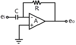
- 부호 변환기
- 신호 검파기
- 적분기
- 미분기
(정답률: 74%)
17. 프로그램의 수행순서를 제어하는 레지스터로 다음에 실행할 명령의 주소를 기억하는 것은?
- 명령 레지스터(IR)
- 프로그램 카운터(PC)
- 기억장치주소 레지스터(MAR)
- 기억장치버퍼 레지스터(MBR)
(정답률: 74%)
18. 다음 명령어에서 CPU의 정보를 기억 장치에 기억하는 명령어는?
- Add
- Shift
- Load
- Store
(정답률: 72%)
19. 2진수 1001과 0101을 OR연산하면?
- 1100
- 1101
- 0001
- 0111
(정답률: 78%)
20. 서브루틴에서의 복귀어드레스가 보관되어 있는 곳은?
- 프로그램 카운터
- 스택
- 큐
- 힙
(정답률: 76%)
21. 논리식
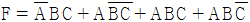
를 카르노맵에 의해 간소화 시킨 식은?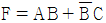
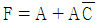
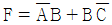
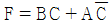
(정답률: 51%)
22. 다음 중 입력장치가 아닌 것은?
- 스캐너
- 프로젝터
- 디지타이저
- 터치스크린
(정답률: 70%)
23. 컴파일러형 언어의 설명으로 틀린 것은?
- 원시 프로그램의 수정 없이 계속 반복수행하는 응용 시스템에서 효율적이다.
- FORTRAN, COBOL, C, 어셈블리어 등이 있다.
- 목적 프로그램을 만든다.
- 고급언어와 관련된 번역프로그램이다.
(정답률: 66%)
24. 순서도의 기호와 의미가 옳은 것은?
- : 수조작
- : 준비
- : 자기테이프
- : 판단
(정답률: 79%)
25. 다음 회로도는 어떤 논리게이트를 나타낸 것인가?
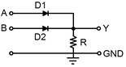
- AND
- OR
- NOT
- NAND
(정답률: 59%)
26. 다음 메모리 중 가장 빠르게 액세스되는 메모리는?
- 가상 메모리
- 주기억 메모리
- 캐시 메모리
- 보조기억 메모리
(정답률: 84%)
27. 다음 논리회로에서 출력이 0이 되려면, 입력조건은?
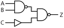
- A=1, B=1, C=1
- A=1, B=1, C=0
- A=0, B=0, C=0
- A=0, B=1, C=1
(정답률: 59%)
28. 컴퓨터의 CPU에 속하지 않는 것은?
- 레지스터
- 주변장치
- 연산장치
- 제어장치
(정답률: 75%)
29. 다음 중 가장 높은 주파수를 측정할 수 있는 계기는?
- 흡수형 주파수계
- 동축 주파수계
- 헤테로다인 주파수계
- 전류력계형 주파수계
(정답률: 71%)
30. 초당 반복되는 파를 펄스로 변화하여 주파수를 측정하는 주파수계는?
- 계수형 주파수계
- 빈 브리지형 주파수계
- 헤테로다인법 주파수계
- 캠벨 브리지형 주파수계
(정답률: 55%)
3과목: 전자측정
31. 1차 코일의 인덕턴스 4[mH], 2차 코일의 인덕턴스 10[mH]를 직렬로 연결했을 때 합성 인덕턴스는 24[mH]이었다. 이들 사이의 상호 인덕턴스는?
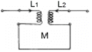
- 2[mH]
- 5[mH]
- 10[mH]
- 19[mH]
(정답률: 65%)
32. 정전 전압계의 특징에 대한 설명으로 틀린 것은?
- 주로 저압 측정용 전압계로 많이 쓰인다.
- 정전 전압계 또는 전위계는 전압을 직접 측정하는 계기이다.
- 정전 전압계의 제동은 공기 제동이나 액체 제동 또는 전자 제동을 사용한다.
- 대표적인 예로는 아브라함 빌라드형과 캘빈형의 정전전압계가 있다.
(정답률: 45%)
33. 헤테로다인 주파수계에서 더블비트(double beat)법이 싱글비트(single beat)법보다 좋은 이유는?
- 오차가 적다.
- 취급이 용이하다.
- 구조가 간단하다.
- 측정 주파수 범위가 넓다.
(정답률: 51%)
34. 그림과 같은 파형이 오실로스코프에 나타났을 때 두 신호의 위상차는? (단, A=1.414, B=1)
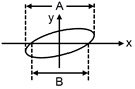
- 45°
- 90°
- 180°
- 동위상
(정답률: 69%)
35. 다음 설명에 가장 알맞은 계기의 명칭은?
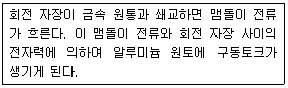
- 가동코일형 계기
- 전류력계형 계기
- 가동철편형 계기
- 유도형 계기
(정답률: 67%)
36. 볼로미터 전력계의 용도로 옳은 것은?
- 직류 전력 측정
- 추격 전력 측정
- 저주파 전력 측정
- 마이크로파 전력 측정
(정답률: 59%)
37. 어떤 전류의 기본파 진폭이 50[mA], 제2고조파 진폭이 4[mA], 제 3고조파 진폭이 3[mA]라면 이 전류의 왜형률은?
- 5[%]
- 10[%]
- 15[%]
- 20[%]
(정답률: 54%)
38. 최대눈금이 100[V]인 0.5급 전압계로 전압을 측정하였더니 지시가 50[V]이었다면 상대오차는?
- 0.5[%]
- 1.0[%]
- 1.5[%]
- 1.75[%]
(정답률: 46%)
39. 지시계기의 3대 요소가 아닌 것은?
- 기록장치
- 제어장치
- 제동장치
- 구동장치
(정답률: 76%)
40. 마이크로파 추정에서 정재파비가 2일 때 반사계수는?(오류 신고가 접수된 문제입니다. 반드시 정답과 해설을 확인하시기 바랍니다.)
- 1/2
- 1/3
- 1
- 2
(정답률: 67%)
41. 유전가열의 공업제품에 대한 응용에 해당하지 않는 것은?
- 합성수지의 예열 및 성형가공
- 합성수지의 접착
- 목재의 접착
- 목재의 세척
(정답률: 74%)
42. 자동제어 조절계의 제어동작에서 D동작은?
- 온·오프 동작
- 비례 동작
- 비례적분 동작
- 미분 동작
(정답률: 52%)
43. CD에 관한 설명으로 틀린 것은?
- Compact Disc의 줄임말로, 처음 필립스사와 소니사에 의해 개발되었다.
- 피트(음구)의 크기는 소리의 강약에 비례하도록 설계되어 있다.
- 기계적 접촉이 없이 레이저 빔에 의해 디지털 방식으로 소리가 재생된다.
- 녹음 후 재생 시에는 음성신호로 고치는 펄스신호변조(PCM) 방식을 사용한다.
(정답률: 48%)
44. 채널을 선택하고 수신된 고주파를 증폭, 주파수를 변환하여 주간 주파수를 얻는 회로는?
- 편향 회로
- 튜너 회로
- 음성신호 회로
- 동기분리 회로
(정답률: 63%)
45. 다음 중 TV 수신 안테나가 아닌 것은?
- 반파장 다이폴 안테나
- 폴디드(folded) 안테나
- 야기(yagi) 안테나
- 비월 안테나
(정답률: 62%)
4과목: 전자기기 및 음향영상기기
46. 다음 그림에서 종합 전달 함수는 어떻게 표시되는가?
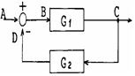
- G1ㆍG2
- G1 + G2
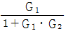
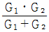
(정답률: 62%)
47. 무선 수신기의 안테나 회로에 웨이브 트랩(wave trap)을 사용하는 목적으로 가장 적절한 것은?
- 페이딩을 방지하기 위하여
- 혼신을 방지하기 위하여
- 델린저의 영향을 방지하기 위하여
- 지향성을 갖게 하기 위하여
(정답률: 51%)
48. 전자냉동의 원리에 대한 설명으로 틀린 것은?
- 펠티어 효과를 이용한 것이다.
- 펠티어 효과는 물질에 따라 다르다.
- 펠티어 효과는 접점을 통과하는 전류에 반비례한다.
- 펠티어 효과가 클수록 효과적인 냉각기를 얻을 수 있다.
(정답률: 68%)
49. 녹음기 사용에 대한 설명으로 옳은 것은?
- 헤드면에 먼지가 쌓일 때는 알콜을 이용하여 닦아낸다.
- 녹음 성능이 감소되었을 때는 헤드에 강한 자석을 접근시켜 소자시켜 준다.
- 테이프 속도가 일정하지 않을 때는 테이프 가이드와 텐션암을 알콜로 닦아낸다.
- 강한 자석을 헤드에 접근시키면 자화가 증진되어 녹음 성능이 개선된다.
(정답률: 63%)
50. 다음 중 서보기구의 구성에 포함되지 않는 것은?
- 단상전동기
- 리졸버
- 차동변압기
- 싱크로
(정답률: 58%)
51. 프로세스 제어에서 조절계의 제어동작과 관계없는 것은?
- 온-오프 동작
- 비례위치 동작
- 비례 적분 미분 동작
- 변환 동작
(정답률: 42%)
52. 자기녹음기에서 테이프를 일정한 속도로 구동시키기 위한 금속 롤러는?
- 핀치 롤러
- 캡스턴 롤러
- 릴축
- 아이들러
(정답률: 70%)
53. 다음 중 전자 현미경에 대한 짝이 옳지 않은 것은?
- 매질 - 진공
- 상관찰수단 - 형광막상의 상 또는 사진
- 초점 조절 - 대물렌즈와 시료의 거리를 조절
- 콘트라스트가 생기는 이유 - 산란 또는 흡수
(정답률: 63%)
54. 2종류의 금속으로 구성되는 회로에 전류를 흘렸을 때, 그 접합점에 열의 흡수 발생이 일어나는 현상은?
- 펠티어 효과
- 톰슨 효과
- 지벡 효과
- 줄 효과
(정답률: 69%)
55. 비디오 신호를 기록 재생하기 위한 조건과 가장 거리가 먼 것은?
- 비디오 헤드의 갭을 좁게 한다.
- 비디오 신호를 변조해서 기록한다.
- 비디오 헤드의 모양을 보기 좋게 한다.
- 비디오 헤드와 자기테이프의 상대속도를 크게 한다.
(정답률: 73%)
56. 수신기에서 주파수 다이버시티(frequency diversity) 사용의 주된 목적은?
- 페이딩(fading) 방지
- 주파수 편이 방지
- S/N저하 방지
- 이득저하 방지
(정답률: 68%)
57. 전방향식 AN레인지 비컨이라고도 하며, 108~118[㎒]의 초단파를 사용하는 전파항법 방식은?
- VOR
- TACAN
- 회정 비컨
- 무지향성 비컨
(정답률: 54%)
58. 다음 중 정류회로에서 리플함유율을 줄이는 방법으로 가장 이상적인 것은?
- 반파 정류로 하고 필터콘덴서의 용량을 크게 한다.
- 브리지 정류로 하고 필터콘덴서의 용량을 줄인다.
- 브리지 정류로 하고 필터콘덴서의 용량을 크게 한다.
- 반파 정류로 하고 필터 초크코일의 인덕턴스를 줄인다.
(정답률: 54%)
59. 15[°C]의 바닷물 속에서 초음파 속도는 1527[m/sec]이다. 초음파를 발사하여 왕복하는 시간이 4초 소요되었다면 이 바닷물의 깊이는?
- 1527[m]
- 3⑤4[m]
- 4581[m]
- 6108[m]
(정답률: 70%)
60. 초음파 가습기의 원리는 초음파의 어떤 작용을 이용한 것인가?
- 소나
- 펠티어효과
- 회절작용
- 캐비테이션
(정답률: 68%)